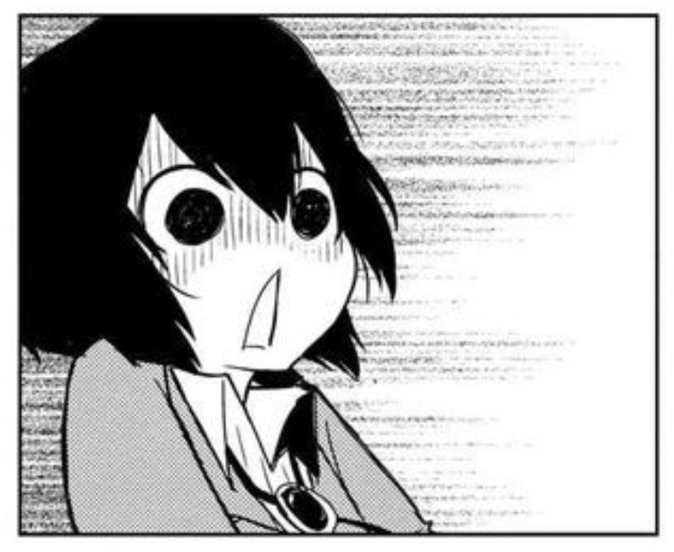
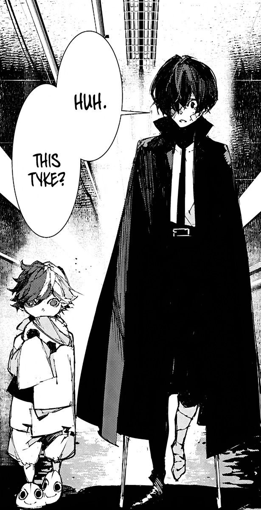

Personality
Dazai is a mysterious person, his true intentions are never revealed unless he reveals them. The person who got closest to the truth of his personality, as acknowledged by Dazai himself, was his friend Sakunosuke Oda, who recognized that Dazai shall linger in the darkness forever, as there was nearly nothing that can surpass his mind. Regardless whether he is on the side of killing people or saving them, Oda knew that no place in the world could fill Dazai's loneliness, which Oda thought Dazai knew in himself.

In addition, Dazai kept an enigmatic and dark façade, whose endeavors in the Mafia were unrivaled and eventually earned him the status as the youngest leader in the history of the Mafia (歴れき代だい最さい年ねん少しょう幹かん部ぶ, reki daisainenshō kanbu?). Because of his aptitude despite his youth, Dazai contributed to about half the Mafia's profits for at least two years. Eventually, Dazai's ledger became tainted; Ichiyō Higuchi describes his blood to be "dark as the Mafia itself". Even in his adulthood when he becomes an Agency member, when Kyōka Izumi showed remorse over having killed 35 people, Dazai remarked with a sinister face that such number is nothing. As a saying in the Mafia went, "The greatest misfortune for Dazai's enemies is that they are Dazai's enemies", for Dazai was aptly described to be "practically born to be in the Mafia". He was extremely confident and was a terrific planner, coming up with long-run strategies to subdue his enemies. For instance, he was able to lure Mimic operatives, who were previously trained soldiers, to fall under his trap. Dazai is quite skilled in persuasion notably through his words, which he appeared to utilize in interrogations that broke targets who did not divulge anything under Kōyō Ozaki's torture squad. ehind this grim persona, Dazai admitted that he joined the Mafia to be exposed to death, violence, and people giving in to their urges and desires, expecting that—in this way—he would be able to see the inner nature of humankind firsthand in hopes of finding a reason to live. Following Oda's demise, Dazai defected from the Mafia and went underground in order to heed Oda's final request for him to "be on the side that saves people". Admittedly, he reckoned that people change over time where potential surfaces, which apparently seems to apply to himself as well.
Upon joining the Agency, Dazai is usually called lazy, with Doppo Kunikida always scolding him for being unproductive and slacking off. Despite that, he has shown a sharp wit, deducing all the unlikely situations that led Atsushi Nakajima to believe he was being stalked by a tiger when he was the tiger in question. He has complete confidence no matter what type of situation he is dealing with, be it combat or simply bad situations he formulated in the first place. In most occasions, Dazai is overly dramatic. He takes most of his actions as a joke, and, although they are very well-thought plans, he does not credit himself for most of what he has done. Dazai likes to tease anyone and everyone, especially if it means that he can get a laugh out of it. As a suicide maniac, he often attempts to commit suicide in comical manners, but he oftentimes fails or gives up on it when such methods are painful. Dazai, in particular, wishes to commit double suicide with a beautiful woman; though he admits that he "likes all types of women", he possibly prefers the type who would die with him if he asked to. Kunikida once wondered why Dazai is quite popular with women and called him a menace to women, a sentiment Chūya Nakahara once used when he threatened to leak Dazai's address to every woman he ever made cry, which Dazai soon asked him not to do. Dazai also once had a run-in with a bomb threat instigated by a woman whom Dazai figured was obsessed with him. While his suicidal tendencies are initially comedic, they reveal a truly dark deep hole that Dazai has. Even as a teenage boy, Dazai questioned whether there was any value in life.[9] Thus, he soon tried to fill this hole and find a reason worth living for, choosing to live a life surrounded by bloodshed and war, but his friend Oda with his dying breath convinced him to choose the good side. He understood that even though good and evil mean little to Dazai, he may become a slightly better person if he were to choose well.
In the past, while he was still suicidal, it was shown to be far less comedic. He even described the death as a way to free himself from the oxidizing world, but, strangely enough, he could not die no matter how hard he tried. Additionally, he was extremely brutal and methodical, setting up traps to catch captives alive to torture them for information, and he would often beat his then apprentice Ryūnosuke Akutagawa for disobeying orders and to push him to the limits to improve his abilities
“I am a man who wants to die.” — Example quote showing his personality